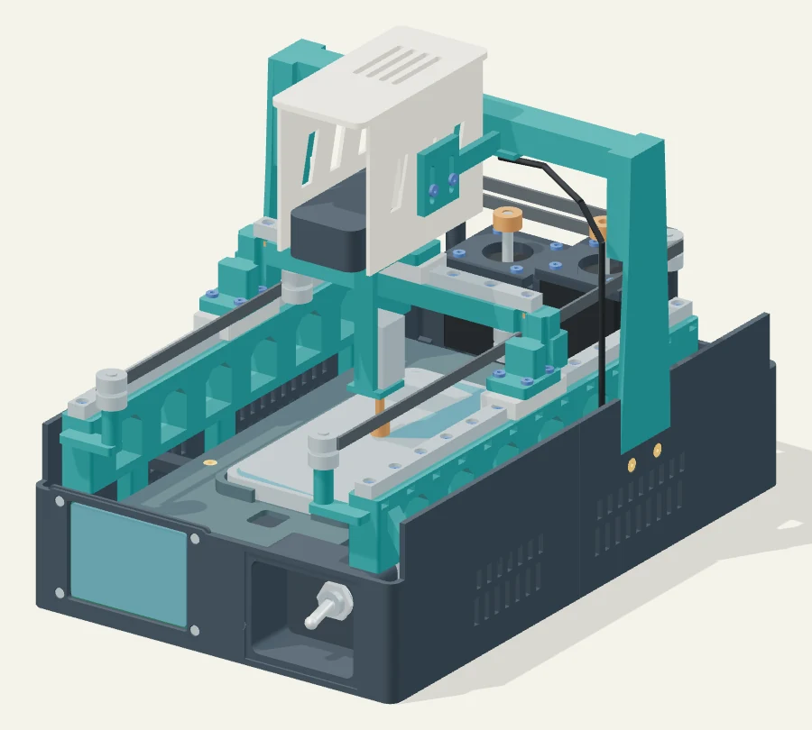
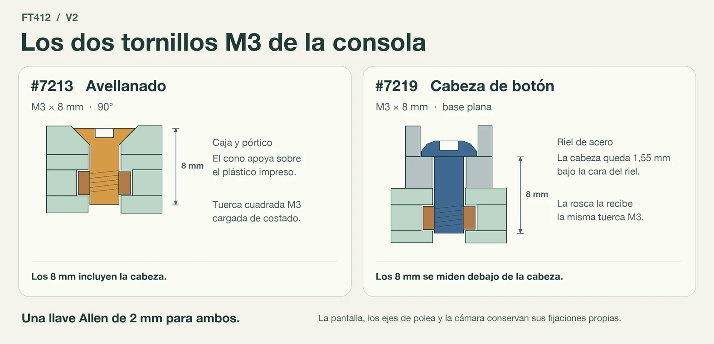

Recorrido
Los tres patines permanecen sobre sus guías en un campo geométrico de 110,1 × 210,1 mm. Con 2 mm de margen en cada extremo quedan 106,1 × 206,1 mm.
FT412 / V2

Los dos tornillos de uso general comparten diámetro, longitud y llave Allen de 2 mm. Cada tipo de cabeza tiene su propio asiento.

| Unión | Tornillo | Unidades | Tuercas |
|---|---|---|---|
| Mitades del chasis | #7213 | 2 | 2 M3 |
| Soportes de riel al piso | #7213 | 6 | 6 M3 |
| Pórtico al chasis | #7213 | 4 | 4 M3 |
| Panel de servicio y cama | #7213 | 2 | 2 M3 |
| Dos rieles largos y uno corto | #7219 | 34 | 34 M3 |
| Tres patines | #7219 | 12 | Rosca propia |
| Dos motores NEMA 17 | #7219 | 8 | Rosca propia |
| Placa MKS | #7219 | 4 | 4 M3 |
| Corredera de la cámara | #7219 | 2 | 2 M3 |
| Pantalla TS24-R | M2,5 × 8 | 4 | 4 M2,5 con arandela |
Los alojamientos para las tuercas cuadradas miden 5,8 × 2,7 mm en la boca. Se cargan de costado. La Raspberry Pi y la cajita Adafruit se sujetan con lengüetas impresas.
Los tres patines permanecen sobre sus guías en un campo geométrico de 110,1 × 210,1 mm. Con 2 mm de margen en cada extremo quedan 106,1 × 206,1 mm.
La cámara se regula entre 95 y 110 mm del vidrio. Con la referencia de 100 mm, el conjunto alcanza 231 mm de altura y el lente queda 65 mm por encima del asiento de los rieles.
La menor distancia calculada entre una correa y un tornillo es de 1,4 mm. La fuente externa es la MEAN WELL GST160A12-R7B de 12 V y 138 W. La toma Kycon y los dos convertidores aún requieren una prueba de encaje. Quedan por probar la tensión de las correas, el ajuste de las lengüetas y la temperatura de la electrónica bajo carga. Alimentación de la V2 · V2 power supply in English
Las seis estaciones de polea requieren ejes de hombro liso de Ø5 mm con rosca M4. La C922 conserva la fijación de trípode de ¼″ y el interruptor S301T, su tuerca propia. El cierre definitivo del cabezal, el tensor y los separadores depende del prototipo físico.
Alimentación de la V2 · Guías MGN de HIWIN · Cámara Logitech C922 · Plano Raspberry Pi 5.